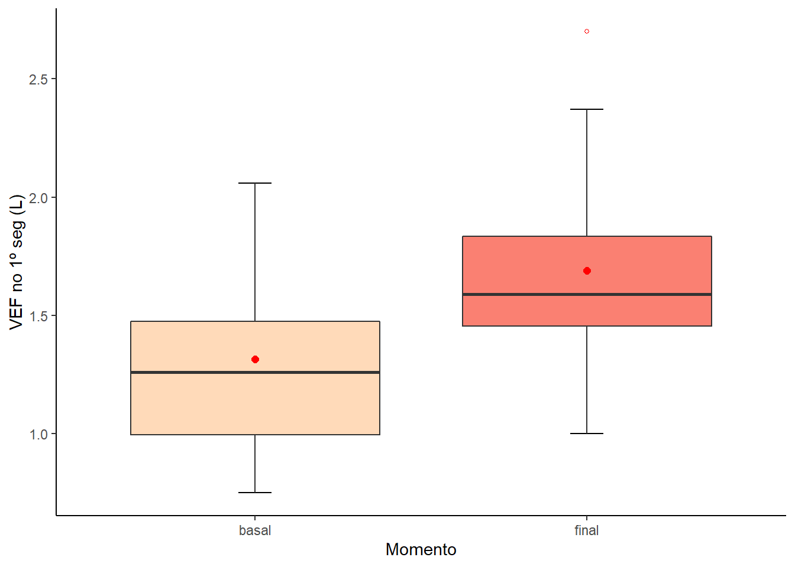
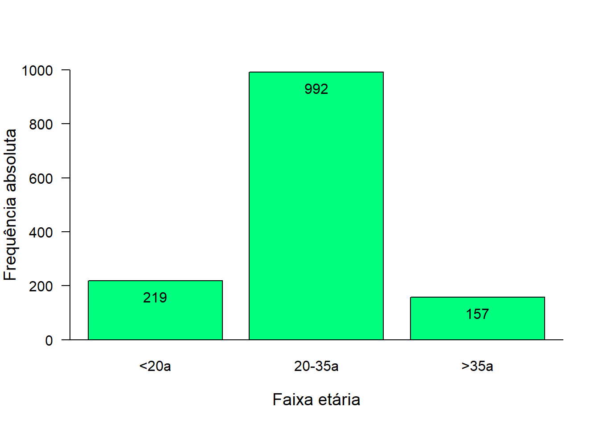

Capítulo 10 Gráficos
10.2 Carregar os Dados
Como exemplo, será usado um arquivo com observações de 1368 nascimentos da maternidade escola do Hospital Geral de Caxias do Sul, contendo 30 variáveis.
Para obter os dados você deve clicar aqui e baixar para o seu diretório de trabalho o arquivo dadosMater.xlsx.
Crie um objeto mater para receber os dados, a partir do diretório de trabalho, executando o seguinte código:
mater <- read_excel ("C:/Users/petro/Dropbox/Git_repositório/Arquivos/dadosMater.xlsx")10.3 Exploração do banco de dados
10.3.1 Visão Geral do banco de dados
Inicialmente, vamos ter uma visão geral do banco de dados, usando a função glimpse (), do pacote dplyr. Ela nos mostra como os dados estão dispostos e a classe de cada variável. O banco tem 1368 linhas (casos) e 30 colunas (variáveis). Todas as variáveis estão como numéricas (dbl).
glimpse (mater)## Rows: 1,368
## Columns: 30
## $ id <dbl> 1, 2, 3, 4, 5, 6, 7, 8, 9, 10, 11, 12, 13, 14, 15, 16, 17, 1…
## $ idadeMae <dbl> 42, 29, 19, 31, 34, 29, 30, 34, 17, 32, 32, 31, 32, 19, 40, …
## $ altura <dbl> 1.65, 1.66, 1.72, 1.55, 1.60, 1.50, 1.54, 1.63, 1.68, 1.50, …
## $ peso <dbl> 69.9, 78.0, 81.0, 74.0, 60.0, 60.0, 75.5, 61.0, 57.0, 70.0, …
## $ ganhoPeso <dbl> 3.9, 16.5, 5.0, 43.0, 15.0, 11.4, 10.5, 9.0, 15.0, 11.4, 18.…
## $ anosEst <dbl> 3, 11, 9, 5, 7, 8, 4, 6, 10, 1, 4, 4, 18, 8, 2, 7, 3, 7, 11,…
## $ cor <dbl> 2, 1, 2, 2, 2, 2, 1, 1, 1, 2, 1, 1, 1, 2, 1, 1, 1, 1, 1, 2, …
## $ eCivil <dbl> 1, 2, 1, 2, 2, 2, 2, 2, 2, 2, 2, 2, 2, 2, 2, 1, 2, 2, 2, 2, …
## $ renda <dbl> 1.45, 2.41, 1.93, 1.45, 0.48, 0.96, 1.20, 2.41, 2.17, 0.72, …
## $ fumo <dbl> 2, 2, 2, 2, 2, 1, 1, 2, 2, 2, 2, 2, 2, 2, 1, 2, 1, 2, 2, 2, …
## $ quantFumo <dbl> 0, 0, 0, 0, 0, 10, 20, 0, 0, 0, 0, 0, 0, 0, 5, 0, 10, 0, 0, …
## $ prenatal <dbl> 2, 1, 2, 2, 2, 1, 1, 2, 2, 1, 1, 1, 1, 1, 1, 1, 1, 2, 2, 1, …
## $ para <dbl> 5, 0, 0, 1, 2, 1, 2, 1, 0, 4, 1, 4, 0, 1, 6, 0, 3, 0, 1, 1, …
## $ droga <dbl> 2, 2, 2, 2, 2, 2, 2, 2, 2, 2, 2, 2, 2, 2, 1, 2, 2, 2, 2, 2, …
## $ ig <dbl> 29, 33, 33, 33, 33, 33, 33, 33, 34, 34, 35, 35, 35, 35, 36, …
## $ tipoParto <dbl> 2, 2, 1, 1, 2, 1, 2, 1, 1, 2, 2, 2, 2, 2, 1, 2, 2, 2, 2, 1, …
## $ pesoPla <dbl> 224, 1118, 452, 432, 574, 600, 632, 710, 600, 310, 690, 522,…
## $ sexo <dbl> 2, 2, 2, 2, 2, 2, 2, 2, 2, 2, 2, 2, 2, 2, 2, 2, 2, 1, 1, 1, …
## $ pesoRN <dbl> 1035, 2300, 1580, 1840, 2475, 1830, 1800, 2200, 2180, 1685, …
## $ compRN <dbl> 35.5, 45.0, 39.0, 41.0, 47.0, 41.0, 44.0, 44.0, 47.0, 48.0, …
## $ pcRN <dbl> 28, 32, 28, 32, 32, 29, 32, 32, 30, 27, 33, 32, 34, 34, 34, …
## $ apgar1 <dbl> NA, NA, NA, NA, NA, NA, NA, NA, NA, NA, NA, NA, NA, NA, 5, 5…
## $ apgar5 <dbl> NA, NA, NA, NA, NA, NA, NA, NA, NA, NA, NA, NA, NA, NA, 7, 8…
## $ utiNeo <dbl> 1, 2, 1, 1, 1, 1, 2, 2, 1, 1, 2, 1, 1, 2, 2, 2, 2, 1, 2, 2, …
## $ obito <dbl> 2, 2, 2, 2, 2, 2, 2, 2, 2, 2, 2, 2, 2, 2, 2, 2, 2, 2, 2, 2, …
## $ hiv <dbl> 2, 2, 2, 2, 1, 2, 2, 2, 2, 2, 2, 2, 2, 2, 2, 2, 2, 2, 2, 2, …
## $ sifilis <dbl> 2, 2, 2, 2, 1, 2, 2, 2, 2, 2, 2, 2, 2, 2, 1, 2, 2, 2, 2, 2, …
## $ rubeola <dbl> 2, 2, 2, 2, 2, 2, 2, 2, 2, 2, 2, 2, 2, 2, 2, 2, 2, 2, 2, 2, …
## $ toxo <dbl> 2, 2, 2, 2, 2, 2, 2, 2, 2, 2, 2, 2, 2, 2, 2, 2, 1, 2, 2, 2, …
## $ infCong <dbl> 2, 2, 2, 2, 1, 2, 2, 2, 2, 2, 2, 2, 2, 2, 1, 2, 1, 2, 2, 2, …10.3.2 Transformação e criação de variáveis
Vamos começar limitando o banco de dados, selecionando apenas as variáveis que serão usados neste tutorial:
mater1 <- mater %>%
select(idadeMae, anosEst, fumo, para)
glimpse(mater1)## Rows: 1,368
## Columns: 4
## $ idadeMae <dbl> 42, 29, 19, 31, 34, 29, 30, 34, 17, 32, 32, 31, 32, 19, 40, 1…
## $ anosEst <dbl> 3, 11, 9, 5, 7, 8, 4, 6, 10, 1, 4, 4, 18, 8, 2, 7, 3, 7, 11, …
## $ fumo <dbl> 2, 2, 2, 2, 2, 1, 1, 2, 2, 2, 2, 2, 2, 2, 1, 2, 1, 2, 2, 2, 2…
## $ para <dbl> 5, 0, 0, 1, 2, 1, 2, 1, 0, 4, 1, 4, 0, 1, 6, 0, 3, 0, 1, 1, 2…A seguir, vamos transformar a variável fumo como fator e criar duas novas variáveis a partir das variáveis idadeMae e anosEst, que também serão fatores:
mater1$fumo <- factor (mater1$fumo,
levels = c(1, 2),
labels = c("sim", "não"))
mater1$categIdade <- cut (mater$idadeMae,
breaks=c (13,20,36,46),
labels = c ("<20a", "20-35a", ">35a"),
right = FALSE,
ordered_result = TRUE,
include.lowest = TRUE)
mater1$escolaridade <- cut (mater1$anosEst,
breaks= c (0,10,13,18),
right = FALSE,
labels = c("Fundamental",
"Médio",
"Superior"),
include.lowest = TRUE)
glimpse (mater1)## Rows: 1,368
## Columns: 6
## $ idadeMae <dbl> 42, 29, 19, 31, 34, 29, 30, 34, 17, 32, 32, 31, 32, 19, 4…
## $ anosEst <dbl> 3, 11, 9, 5, 7, 8, 4, 6, 10, 1, 4, 4, 18, 8, 2, 7, 3, 7, …
## $ fumo <fct> não, não, não, não, não, sim, sim, não, não, não, não, nã…
## $ para <dbl> 5, 0, 0, 1, 2, 1, 2, 1, 0, 4, 1, 4, 0, 1, 6, 0, 3, 0, 1, …
## $ categIdade <ord> >35a, 20-35a, <20a, 20-35a, 20-35a, 20-35a, 20-35a, 20-35…
## $ escolaridade <fct> Fundamental, Médio, Fundamental, Fundamental, Fundamental…10.4 Gráfico de Setores (Pizza)
Cada segmento (fatia) do gráfico de pizza deve ser proporcional à frequência da categoria que representa. A desvantagem do gráfico de pizza é que ele só pode representar uma variável, portanto, há necessidade de um gráfico separado para cada variável que se deseja representar. Além disso, um gráfico de pizza pode perder clareza se ele é usado para representar mais do que quatro ou cinco categorias.
Os gráficos de pizza são amplamente conhecidos como uma maneira ruim de
visualizar informações.
Com variável mater1$escolaridade e, usando a função table (), criamos uma tabela (tab_escola):
tab_escola <- table(mater1$escolaridade)
tab_escola##
## Fundamental Médio Superior
## 983 358 27Ou
tab_escola <- xtabs(~mater1$escolaridade, data = mater)
tab_escolaUsando as informações da tab_escola, cria-se o vetor escola:
escola <- c(983, 358, 27)Com a função pie (), vamos construir o gráfico de setores:
pie (escola,
labels = c ("Fundamental",
"Médio",
"Superior"),
main = NULL,
col = c ("skyblue",
"cyan",
"lightblue1"))
É possível, também, construir uma pizza em 3 D, usando a função pie3D () do pacote plotrix:
pie3D (escola,
labels = c("Fundamental",
"Médio",
"Superior"),
radius = 0.9,
explode = 0.1,
col = c ("skyblue",
"cyan",
"lightblue1"),
main="Grau de Instrução das Parturientes")
10.4.1 Gráfico de setores com o ggplot2
Inicialmente, cria-se um dataframe, que chamaremos de df_escola, onde grupo são as categorias de escolaridade, n é a frequência de cada categoria e pro é a proporção de cada categoria (frequência de cada categoria dividido pelo total):
df_escola <- data.frame(
grupo = c("Fundamental", "Médio", "Superior"),
n = c (983, 358, 27),
prop = round(c((983/1368)*100, (358/1368)*100, (27/1368)*100),1))
df_escola## grupo n prop
## 1 Fundamental 983 71.9
## 2 Médio 358 26.2
## 3 Superior 27 2.0Vamos agora transformar o dataframe criado, usando as funções arrange (), que colocará as categorias em ordem descentente, e mutate (), que calculará a posição dos rótulos no eixo y. Ambas funções pertecem ao pacote dplyr:
df_escola <- df_escola %>%
arrange(desc(grupo)) %>%
mutate(lab.ypos = cumsum(prop) - 0.5*prop)
df_escola## grupo n prop lab.ypos
## 1 Superior 27 2.0 1.00
## 2 Médio 358 26.2 15.10
## 3 Fundamental 983 71.9 64.15Para criar gráfico de pizza com o ggplot2, usaremos como função chave o geom_bar () + coord_polar (). Adicionremos texto com a função geom_text () e as cores de preenchimento com scale_color_manual (). Será aplicado por último theme_void () para remover eixos, fundos, etc.
As cores escolhidas são colocas em objeto minhas_cores:
minhas_cores <- c("steelblue", "salmon", "yellow")Gráfico
ggplot(df_escola, aes(x = "", y = prop, fill = grupo)) +
geom_bar(width = 1, stat = "identity", color = "white") +
coord_polar("y", start = 0)+
geom_text(aes(y = lab.ypos, label = prop), color = "black", size = 5)+
scale_fill_manual(values = minhas_cores) +
theme_void()
Voltaremos ao ggplot2 mais adiante.
10.4.2 Uma variação do gráfico de pizza: gráfico de rosca (Donut chart)
ggplot(df_escola, aes(x = 2, y = prop, fill = grupo)) +
geom_bar(stat = "identity", color = "white") +
coord_polar(theta = "y", start = 0)+
geom_text(aes(y = lab.ypos, label = prop), color = "black", size = 5)+
scale_fill_manual(values = minhas_cores) +
theme_void()+
xlim(0.5, 2.5)
10.5 Gráficos de Barras
10.5.1 Gráfico de Barras Simples
Começamos construindo uma tabela usando a variável mater1$categIdade:
tab_idade <- table(mater1$categIdade)Após, usando a função barplot (), construímos o gráfico de barras:
barplot(tab_idade)A seguir, usando outros argumentos próprios da função, melhoramos o aspecto do gráfico. O argumento ylim = vai corrigir o limite do eixo y que ficou em 800 e deveria ser 1000; col = tornará as barras de cor azul metálico (steelblue); ylab = e xlab = colocam rótulos nos eixos; las = 1 faz o texto do eixo y ficar horizontal e cex.lab = 1.2 aumenta o texto dos rótulos em 20%. A função box (bty = "L") (opcional) faz os eixos se encontraren em 0.
barplot(tab_idade,
ylim = c (0,1000),
col= "steelblue",
border = "black",
ylab = "Frequência absoluta",
xlab = "Faixa etária",
cex.lab = 1.2,
las = 1)
box(bty = "L")
Além disso, é possível fazer outras alterações para tornar o gráfico mais informativo, como as frequência de cada barra colocada no topo das mesmas:
1º Passo: Criar um gráfico de barras , colocando-o em um objeto
x, que conterá a coordenada X do centro de cada uma das barras. Para verificar isso basta executar o objetox:2º Passo: colocar a tabela tab_idade com um objeto
yda classe matriz:3º Passo: usar a funçãoo
text ()para colocar os valores:
x <- barplot(tab_idade,
ylim = c (0,1000),
col= "springgreen",
border = "black",
ylab = "Frequência absoluta",
xlab = "Faixa etária",
cex.lab = 1.2,
las = 1)
box(bty = "L")
y <- as.matrix(tab_idade)
text (x, y, labels = as.character(y), adj = c(0.5, 2), col = "black")
O gráfico de barras simples pode ser construído com as barras horizontais. Basta usar o argumento horiz = TRUE e adaptando os eixoa x e y, para essa situação:
barplot(tab_idade,
xlim = c (0,1000),
col= "salmon",
border = "black",
ylab= "",
xlab = "Frequência absoluta",
cex.lab = 1.3,
horiz=TRUE,
las = 1)
box(bty = "L")
10.5.2 Gráfico de Barras Empilhadas
Para este tipo de apresentação usamos, praticamente, os mesmos argumentos vistos para gerar um gráfico de barra simples. Como existem duas variáveis, há necessidade de avisar ao R como elas devem aparecer. Para isso, foi usado o argumento beside = FALSE, que informa que as barras não estarão uma ao lado da outra e sim empilhadas. O padrão é as barras ficarem uma ao lado da outra. Acresscenta-se uma legenda com a função legend() na parte superior esquerda (topleft). O argumento bty = "n" informa que não queremos um quadro ao redor da legenda e fill = c ("dimgrey", "salmon") são as cores das barras.
tab_fumo <- table (mater1$fumo, mater1$categIdade)
tab_fumo##
## <20a 20-35a >35a
## sim 35 235 31
## não 184 757 126barplot (tab_fumo,
beside=FALSE,
ylim = c (0,1000),
xlab="Faixa Etária das gestantes",
ylab = "Frequência",
col = c ("dimgrey", "salmon"),
cex.lab = 1.2,
cex.axis = 1.2,
cex.names = 1.2)
box(bty = "L")
legend (legend=c ("Fumantes", "Não Fumantes"),
fill = c ("dimgrey", "salmon"),
bty="n",
cex = 1,
"topleft")10.5.3 Gráfico de Barras Lado a Lado
É igual a anterior, apenas com o argumento beside = TRUE.
barplot (tab_fumo,
beside=TRUE,
ylim = c (0,800),
xlab="Faixa Etária das gestantes",
ylab = "Frequência",
col = c ("dimgrey", "salmon"),
cex.lab = 1.2,
cex.axis = 1.2,
cex.names = 1.2)
box(bty = "L")
legend (legend=c ("Fumantes", "Não Fumantes"),
fill = c ("dimgrey", "salmon"),
bty="n",
cex = 1,
"topleft")
10.5.4 Gráfico de barras com variáveis discretas
A variável para é uma variável numérica discreta e, para representá-la o mais adequado é usar um gráfico de barras simples.
tab_filhos<- table (mater1$para)
barplot (tab_filhos,
col = "salmon",
xlab="Número de filhos anteriores ao atual",
ylab = "Frequência",
ylim = c(0, 500),
cex.lab = 1.2,
cex.axis = 1.2,
cex.names = 1.2)10.5.5 Gráfico de Barras Simples com o ggplot2
Ele segue as seguintes etapas:
- Crie os dados como um data.frame
table(mater1$categIdade)##
## <20a 20-35a >35a
## 219 992 157df_idade <- data.frame (
categ = c ("<20a", "20-35a", ">35a"),
freq = c (219, 992, 157))
df_idade## categ freq
## 1 <20a 219
## 2 20-35a 992
## 3 >35a 157Para a construção do gráfico:
- Comece chamando a função
ggplot (); - Em seguida, especifique o objeto de dados,
df_idade. Tem que ser um dataframe. Necessita uma variável numérica(freq) e outra categórica (categ); - Então vem a estética, definida na função
aes (): defina a variável categórica para o eixo X, use a numérica para o eixo Y - Finalmente, chame
geom_bar (). Você deve especificarstat = "identity"para este tipo de conjunto de dados e a largura das barraswidth = 0.7. - Para controlar outros aspectos:
- Cores:
color =é para a borda da barra efill =é a cor do preenchimento. Para estabelecer a cor de cada barra manualmnete, usescale_fill_manual(); - Para remover a legenda, use
theme(legend.position = "none") - Pa um aspecto clássico, use
theme_classic (); - Para colocar as frequências no topo das barras, use
geom_text (); - para que as barras fiquem horizontais, usar
coord_flip (), fazendo ajustes para o texto das frequências e para os rótulos dos eixos.
- Cores:
df_idade %>%
mutate(categ = factor(categ, levels=c("<20a", "20-35a", ">35a"))) %>%
ggplot(aes(x = categ, y=freq, fill = categ)) +
geom_bar(stat = "identity", width = 0.7) +
ylab("Frequência") +
xlab("Idade da Parturiente") +
scale_fill_manual(values = c("lightsalmon1", "salmon", "lightsalmon4")) +
theme_classic() +
theme(legend.position="none") +
geom_text(aes(label=paste0(freq)), vjust=1.5, colour="white")10.6 Leitura Adicional
Holtz Y. Barplot.The R Graph Gallery. Disponível em: https://www.r-graph-gallery.com/barplot.html. Acesso em 14/08/2022.
H. Wickham. ggplot2: Elegant Graphics for Data Analysis. Springer-Verlag New York, 2016. Disponível em: https://ggplot2.tidyverse.org/reference/geom_bar.html Acesso em 14/08/2022